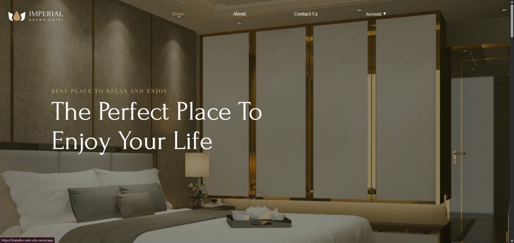
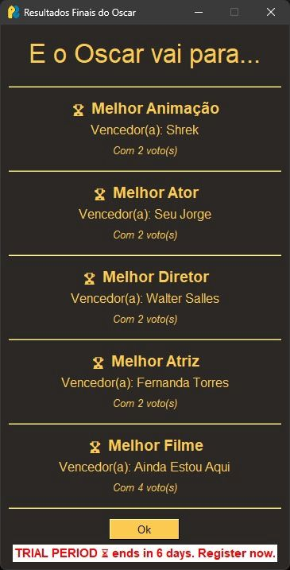

PROJECT CABINET
Everything I have built.
Fourteen projects — AI agents, decision engines, automations, product dashboards, IoT and parallel computing. Each one opens with the problem, what I built and the measured result.
Credit decision engines for 7 partner banks
Eligibility, lead classification and offer rules written as logic and put under automated test.
408 scenarios under test
Open project 02AI & automation AI qualityAudit of a document-classification AI agent
A pipeline that re-reads 4,754 records with Gemini and turns “we think it works” into a number.
4.754 records audited
Open project 03AI & automation AI agents · OperationsPartner request triage with agent orchestration
Two agents read free-text requests, classify urgency and name what is missing before a human opens the queue.
2 agents in the chain
Open project 04AI & automation Automation · OperationsSampling audit automated in n8n
16 workflows turned 4 hours of weekly spreadsheet work into 5 minutes.
20h returned per month
Open project Product analytics
Executive product dashboard — the company’s first Streamlit
Three sales surfaces, live reads from the warehouse, 600+ data-quality tests, presented to the board.
24h→30min data latency
Open project 06Product & data Analytics engineering360° analytics base in dbt
Multiple sources consolidated into one view of individuals and companies, feeding ML models.
2 audiences unified (PF, PJ)
Open project 07Software engineering IoT · Backend · MobileCardioTrack — IoT heart monitoring, end to end
Firmware on ESP32, a Go backend and a Flutter app, deployed with Kubernetes.
3 layers built solo
Open project 08Software engineering Parallel computingParallel cellular automata in C — 33.9× speedup
Pthreads with fixed row bands and barrier synchronisation, measured on the Santos Dumont supercomputer.
33,9× speedup
Open project 09AI & automation Applied AI · Public serviceCivil Defense chatbot — 3rd place, UFSC hackathon
An emergency-response chatbot for Santa Catarina’s Civil Defense, built in a weekend.
3º place
Open project
Full-stackHotel management web application
Authentication, room selection, booking with shared guest data and payment simulation.
Open project
Object-oriented designOscar voting system (OOP final project)
A console app evolved into an interactive desktop application with MVC, persistence and exception handling.
Open project 12Software engineering Requirements · UML · PythonResolvilha — local services platform
From requirements gathering and UML modelling to the Python implementation.
5 UML diagram types
Open project 13Research Research · Statistics in RBroindex — AgroTech sensor research (CNPq)
Time series, data quality and optimisation over 300k+ rows per batch of IoT sensor data.
300k+ rows per batch
Open project 14Product & data Product · Mobile-firstMiúdos — daily expense tracker
A mobile-first expense tracker I built for myself and kept using.
Open project